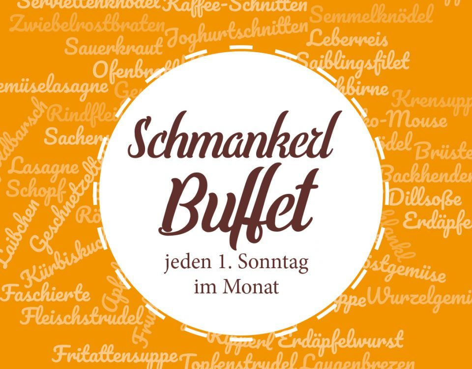

Bar zahlen
Wir bitten Sie, den Rechnungsbetrag bar zu bezahlen, da wir über kein Kreditkartensystem verfügen.
Start › Speisekarte
SpeisekarteErfrischende Säfte, Most, heiße Suppen, unsere hausgemachte Erdäpfelwurst, Almo-Schmankerl, knusprige steirische Backhenderl und hausgemachte Mehlspeisen – das Beste aus der GenussRegion Pöllauer Hirschbirne.
Wir bitten Sie, den Rechnungsbetrag bar zu bezahlen, da wir über kein Kreditkartensystem verfügen.
Die tagesaktuellen Nachtische erfragen Sie bitte beim Servicepersonal.
mit Schlaghauberl und Croutons
In kleinen Stücken mit gemischtem Salatteller
dazu Röstgemüse und Kräuterrahmnudeln
mit Ofenbratl (Schopf und Brüsterl) und Sauerkraut
Naturschnitzerl mit gebratenem Speck, gehacktem Knoblauch und frischen Kräutern, dazu Semmelknöderl
Vulgo: Cordon Bleu – mit Kräuter-Erdäpfeln und Preiselbeeren
mit Reis und Preiselbeeren
mit gemischtem Salatteller
Kinderschnitzel mit Pommes
Hendlhaxerl mit Pommes
Bernerwürstel mit Pommes
Portion Pommes
Alle Preise wie auf der Speisekarte des Hauses ausgewiesen.
Von Montag bis Freitag gibt’s bei uns mittags unsere „Mittagspause“ – das schnelle Menü für alle, die in der Arbeitspause gut essen möchten. Um € 15,90 inklusive Suppe, Hauptspeise und 0,5 l Getränk.
Ideal für Arbeiter, Angestellte, Handwerker und alle, die mittags wenig Zeit haben und trotzdem frisch gekocht essen möchten.
Wichtig: Unsere „Mittagspause“ ist ein zusätzliches Mittagsangebot unter der Woche – selbstverständlich gibt es auch weiterhin unsere reguläre À-la-carte-Karte sowie den normalen Restaurantbetrieb an Wochenenden und Feiertagen.

Genuss hat bei uns Tradition. Am ersten Sonntag im Monat erwartet Sie unser beliebtes Schmankerlbuffet mit einer großen Auswahl an regionalen und saisonalen Köstlichkeiten.
Ob mit der Familie, mit Freunden oder einfach zum Genießen – beim Schmankerlbuffet ist für jeden Geschmack etwas dabei. Wir empfehlen eine rechtzeitige Tischreservierung unter 03335 / 2267.

Familie Stelzer-Hubmann mit dem ganzen Team